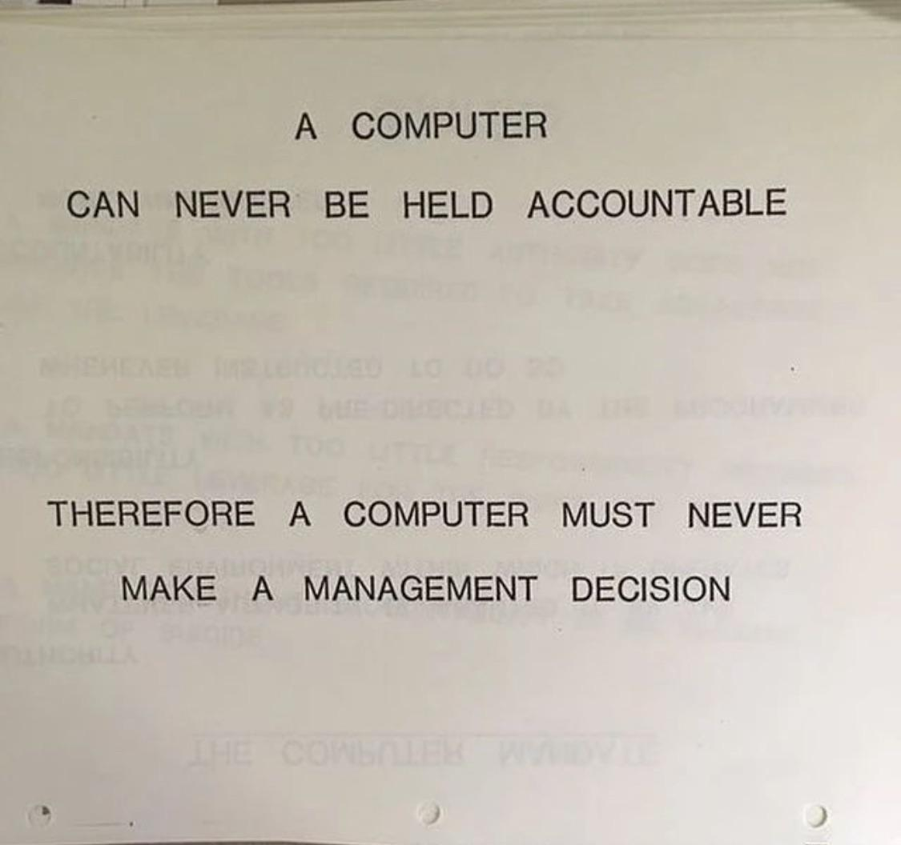

Any computer system doing a task we would otherwise call intelligent. Spell check, fraud detection, chess.
Machine learning
Systems that learn the pattern from examples instead of being given the rules.
Deep learning
Machine learning with very large networks, trained on very large piles of data.
Large language models
Deep learning trained on an enormous amount of text to do one thing: predict the next word. ChatGPT, Claude, Gemini, Copilot.
When people say "AI" today they almost always mean the inner box. Everything in the next fifteen minutes follows from that one job: predict the next word.
Block 1 · How LLMs work
Build a sentence one token at a time
Click the next word. Each choice shifts what comes next, exactly like an LLM.
No right answer, only probabilities. This is why the same prompt gives different output each time.
Block 1 · How LLMs work
Drop a ball, get a word
"The proposal was ___."
Change the word before the blank:
0 balls
Every ball starts where the previous word puts it. Drag the funnel or a nail sideways and watch the pile move.
Block 1 · How LLMs work
Pick a random number between 1 and 10
Open a new chat in any AI tool and ask it exactly that. Call out what you got.
0 answers ·
Tap a number for each answer the room calls out. Watch where they pile up.
Block 1 · How LLMs work
Three ways to pick a number between 1 and 10
Random Every number equally likely. Dice, RANDBETWEEN, a sampler.
Human Skips the obvious ones, drifts toward numbers that feel random. 7 wins.
LLM Trained on humans, then tuned to be confident. The human bump becomes a spike.
The least surprising graph in the world, once you know how the model was trained.
Where "most likely" bites in research administration
When you asked for random and got "most likely"
"Randomly select ten awards for a spot check." The pick looks random and follows hidden patterns. That is a defensibility problem, not a statistics problem.
Transactions for an audit sample. Files for a quality review. Participants for a survey.
AI-written training quizzes put the correct answer in the same few positions, often B. Human test-writers do the same, and it learned from them.
What to do instead
Use a random tool when randomness matters. RANDBETWEEN, a generator, your audit software's sampler.
Make the model run code and show it. "Use code to randomly select 10 rows from this spreadsheet. Show me the code so I can verify the selection."
Check AI-written quizzes. Count which letter is correct and shuffle if it is lopsided.
Write down the method. An audit sample should be reproducible by someone who was not in the room.
The most likely answer is not the same thing as the right answer.
Block 1 · A mental model
You are asking a crowd of a thousand non-experts
Picture a thousand well-read, well-meaning people with no particular expertise. You ask a question, and you get back whatever most of them would say, in one confident voice.
They have read almost everything ever published.
They have read none of your files unless you hand them over.
They answer fast, and they always answer.
There is no minority report. The dissenters are averaged away.
Ask them for a random number and you get the crowd's favorite.
How do you train a crowd? Pay some people to speak louder.
Block 1 · A mental model
When to ask the crowd, and when not to
Ask the crowd
Consensus facts.What an award notice usually contains.
Summarizing.A forty-page solicitation into one page.
Drafting from a pattern.A routine email to a PI, a budget justification.
Brainstorming.Ten ways to phrase a hard message.
Finding things.Where a document talks about cost share.
Do not ask the crowd alone
Niche or local knowledge.Your sponsor's unusual term, your office's practice.
Anything recent.A rule that changed after the model was trained.
A claim nobody has made.The crowd can only repeat what it has read.
Judgment calls.Allowability, a finding, what you ought to do.
Anything that must match twice.Audit samples. Ask twice, get two answers.
The right column is shrinking: models now run code, check their own work, and look things up. It is not empty, and the habit is the same on both sides. Not without checking.
Block 1 · Where LLMs fail
Spot the fabrication
The source: a (synthetic) award notice
Award
2512345
Sponsor
National Science Foundation
PI
Dr. Maria Okafor, Biology
Title
Soil Microbial Response to Prescribed Fire
Amount
$412,500
Period
09/01/2026 to 08/31/2029
Indirect rate
48.5% MTDC
Reports
Annual, due 90 days before each budget period ends
Cost sharing
None required
The AI summary. Click every sentence the source does not support.
NSF has awarded Dr. Maria Okafor $412,500 for a three-year study of soil microbial response to prescribed fire.
The project includes a $60,000 subaward to the U.S. Forest Service for field site access.Not in the source. Summaries usually mention a subaward, so it supplied one.
The award runs from September 2026 through August 2029 at an indirect rate of 48.5% MTDC.
Consistent with the program's standard terms, the award requires a one-to-one institutional cost share.Contradicts the source, which says no cost sharing. What is typical beat what is written.
Annual project reports are due 90 days before the end of each budget period.
Dr. Okafor will be supported by two graduate students and a postdoctoral researcher.Not in the source. Invented staffing.
Confidence is a writing style, not a signal. Every sentence arrived in the same tone.
Block 1 · How LLMs work
Your AI has a page limit
Everything competes for the same context window. Drag the handles or pick a preset.
If you opened this site from the workshop QR code, the key is already loaded and this link carries it. It lives only in your browser tab and is sent only to the University of Idaho's MindRouter.
Block 2 · Debrief
What did you notice?
Discussion
Did Sequita send anyone back to not use AI for the task?
What did Promptulus ask you for that you had left out?
What did Mnemos want that you are not allowed to give a cloud model?
What was your Veridex check? Could a colleague run it?
The takeaway
Prompting is the small part
Better models make prompt wording matter less every quarter. What does not go away: deciding whether the task should be done this way, giving the model what it needs to see, and knowing how you will check the result.
Intent, information, and evaluation outlast any prompt trick.
Block 3 · Memory and the record
A story from Plato, 2,400 years ago
In response to Theuth’s gift of writing, Thamus replied:
This discovery of yours will create forgetfulness in the learners’ souls, because they will not use their memories; they will trust to the external written characters and not remember of themselves. The specific which you have discovered is an aid not to memory, but to reminiscence, and you give your disciples not truth, but only the semblance of truth; they will be hearers of many things and will have learned nothing; they will appear to be omniscient and will generally know nothing; they will be tiresome company, having the show of wisdom without the reality.
Thamus thought writing would weaken people's memory, and that leaning on reminders would weaken their reasoning. For a language model it works the other way: its memory is a mishmash of everything it was trained on, and it reasons better when it is handed an authoritative source of data to work from.
Plato, Phaedrus 274c to 275b, written around 370 BCE. Benjamin Jowett’s translation.
Block 3 · Live demo
Remembering Thamus
The irony is that the only reason we know Thamus’s story is that Plato wrote it down.
Frozen at the training cutoff. The regulation it remembers is the one that was written about most, not the one in force.
Blurred. An average over everything ever published on the subject.
Fills gaps with the most plausible thing, in the same confident voice.
This is where hallucination lives.
Accessed
What the model reads right now from a source you connected.
A document in the window. A regulation fetched by section number. A query against your awards. An API response.
Current as of the source, and citable: it can point to where it looked.
Wrong only if the source is wrong, or the lookup missed. Both are checkable.
Hallucination is recalled knowledge standing in where accessed knowledge was needed. If the answer matters, make it accessed.
Block 3 · Live demo, the query route
AI analyzes what you give it
A small awards table. Prompt: "What is the total federal funding by department?"
Award
PI
Department
Sponsor
Type
Amount
A-001
Martinez
Biology
NSF
Federal
450,000
A-002
Chen
(blank)
NIH
Federal
1,200,000
A-003
Okafor
Engineering
DOE
Federal
680,000
A-004
Patel
Chemistry
(blank)
(blank)
320,000
A-005
Johnson
(blank)
NSF
Federal
550,000
A-006
Williams
Psychology
NIMH
Federal
890,000
A-007
Kim
(blank)
Pfizer
Industry
275,000
A-008
Thompson
Biology
USDA
Federal
410,000
A-009
Garcia
(blank)
(blank)
(blank)
150,000
A-010
Lee
Computer Science
NSF
Federal
725,000
A-011
Davis
(blank)
NIH
Federal
980,000
A-012
Robinson
Engineering
Boeing
Industry
185,000
A-013
Nguyen
Physics
DOE
Federal
560,000
A-014
Brown
(blank)
Gates Foundation
Nonprofit
1,500,000
A-015
Miller
Sociology
(blank)
(blank)
95,000
The model's answer
Psychology
$890,000
Biology
$860,000
Computer Science
$725,000
Engineering
$680,000
Physics
$560,000
Total federal
$3,715,000
"Psychology leads federal funding, followed closely by Biology."
What it could not see
$2,730,000 in federal awards have no department. They vanished from the breakdown. The total is unknowable from this table, and the answer did not say so.
It only looks for gaps when asked, and every answer comes with the same confidence. So ask, every time: how many rows did you use, how many did you leave out, and why?
AI models come and go. The way your institution organizes, governs, and shares its data decides whether any of them are useful.
Block 4 · The data underneath
Why research administration needs a common language
Today
Three institutions, three solutions, zero shared work
One office writes its effort certification query against its ERP. The next rebuilds it against a different ERP. A third rebuilds it against a custom eRA system. Each office holds the same things, a sponsor, a PI, an award, a budget, and every system names them differently. Every report starts by reconciling them again.
And a free-text Department column, filled in when somebody remembered, silently drops three million dollars from a total.
With a shared language
One solution, and the next thirty institutions run it unchanged
A data model is a shared agreement about what things exist, how they relate, and what they are called, before any database is involved. Map each of your systems to it once, and a query, a dashboard, or an AI workflow written anywhere runs at your institution too.
Queries read like English: Funds_Obligated_Amount, not FOA_AMT. And a blank department becomes a validation error instead of a silent omission.
The AI4RA Unified Data Model is a draft of that language. Help us evaluate it.
Forty tables, written by a small team at one institution. Read it against your own world and tell us where it gets your reality wrong, what your office tracks that is missing, and what you call differently. Feedback goes to the AI4RA community list.
Every file as it arrived, blanks and all, so you can always prove what the source said. The audit trail starts here.
Translate each source once
Map your award system, your ERP and your HR feed to the shared model one time. AI proposes the column mapping; a person approves it.
Answer from the reconciled copy
Not from whichever spreadsheet was open. Completeness rules run here, so an award with no department is flagged before anyone asks the question.
The difference is a tool that is confidently wrong and a pipeline that is honestly incomplete. The second one tells the Vice President the total is missing a third of the rows, and by how much.
Any warehouse, lakehouse or well-kept database can do this. Ours is open source at github.com/ui-insight/lakehouse; the shape matters more than the product.
Block 4 · The data underneath
Reminding has a cost
For Thamus
The cost of the written record was forgetting. Trust the marks on the page and you stop carrying the knowledge yourself.
For a machine
The cost is exposure. Everything you hand the model to remind it, it reads: the award terms, the policy, the awards table. All of it travels to wherever the model runs.
You have been paying this cost all morning. The workshop key points at the University of Idaho's own model gateway, a campus service in front of models the university chose, and every request through it is logged. That log is what an audit trail is.
So the next question is not which model. It is where the model runs, and under whose agreement.
Block 4 · The data underneath
Data sovereignty: where does the model run?
Vendor-hosted (Google, OpenAI, Anthropic, Microsoft Copilot)
The largest, most capable models, with no hardware to buy or maintain
Pay per use, scales with the funding cycle
Your document leaves the building, and so does the computing. You do not see where it ran or what it cost in energy.
Two tiers. Public text you could post on a bulletin board: a personal key on a free tier is fine, and that is all it is for. Anything from your institution's systems: the account your institution has vetted, never a personal login. Vendor business tiers carry no-training terms; the institution's agreement adds a named contact and an audit trail. FERPA, HIPAA, export-controlled and PII data may not leave under any agreement.
Self-hosted (Llama, GPT-oss, Qwen, and others, through Ollama or vLLM)
Data never leaves your house. FERPA, HIPAA, PII, and export-controlled material stay where policy says they stay.
You know exactly where the computing is done, by whom, and on what hardware.
You know how much energy you are using. A desktop-class server runs a day of extraction for a few kilowatt-hours; cloud inference is bundled and invisible.
Fixed cost, up front. Vandalizer and MindRouter run this way at Idaho.
The trade: you own the security, the hardware, and the updates. Smaller models than the cloud frontier, though the gap closes every year.
Cloud for general work, local for anything restricted
Enterprise cloud for drafting, summarizing public documents, and high throughput
A local server for award files, personnel data, and anything with a regulation attached
Where most institutions land, whether they planned to or not
The hard part is governance: which models are approved for which data, written down, and someone whose job it is to enforce it.
Three questions for any AI tool: where is the computing done, what leaves the building, and what agreement covers it when it does.
Block 5 · Accountability

A computer can never be held accountable. Therefore a computer must never make a management decision.
IBM training manual, 1979.
Forty-seven years old, written about mainframes, and still the sharpest test we have. Nothing about the crowd changes it.
Block 5 · Accountability
Four questions before you hand it over
1. Can you hand it everything it needs?
The crowd has read nothing of yours. If the answer depends on your award terms, your policy, or your data, they have to be in the question. If you cannot put them there, the task is "data first," not "AI now."
2. Can you check the answer cheaply?
Against a source, a ground-truth sample, a second run, or your own eyes in under a minute. If checking costs as much as doing, you have not saved anything, and you have added a risk.
3. Who is accountable for the result?
A name, a role, a signature. If the honest answer is "the AI," stop. If it is a person who will review before acting, that is augment, and it is fine.
4. Does it have to be the same tomorrow?
Audit samples, determinations, and anything a reviewer might repeat need a reproducible method. The crowd gives a different answer each time it is asked. Write the method down or use a tool that does.
Yes, yes, a named person, and a written method: use it, as augmentation. Any other answer: a person leads, or the data comes first.
Block 5 · Sorting the work
Does it matter how the work got done?
Human leads. Every step must be auditable. AI may assist, but a person owns the reasoning.
Human in the loop. AI prepares, a qualified person reviews and decides.
AI leads. Only the result matters. Validate with spot checks.
Two questions place any task. If someone asked how this was done, would the answer matter? Could a colleague re-run it and get the same result? Both "not really": AI can lead. Either "yes": a person stays in the loop.
Three bins. Which tasks can AI help with today, which need your institutional data in order first, and which should stay with a person?
Pull deadlines, eligibility, and page limits out of a solicitation
Draft a budget justification from a completed budget spreadsheet
Compare a subaward budget to its justification and flag mismatches
Report federal funding by department for the Vice President for Research
List every active award with an overdue effort certification
Predict which of this year's proposals are most likely to be funded
Decide whether a questionable cost transfer is allowable
Negotiate a disputed IP clause with an industry sponsor
Tell a PI their proposal missed the deadline
Block 5 · If your institution has no AI guidance
Start the policy. One page.
Three people in a room
Whoever owns research compliance, usually under the Vice President for Research. Whoever owns information security, usually under the CIO. Someone from the research office who does the work.
Start from what you already have
The data classification policy, if there is one. The enterprise agreement the university almost certainly holds with Microsoft or Google, which decides which tools are in bounds. Borrow a definition of AI from the National AI Initiative Act or NIH rather than writing one.
The page
Which tools. Which data. What review, and by whom. Who signs. A review date six months out, because the tools will have changed.
Until that page exists, the four questions, the two tests, the bulletin-board rule and the vetted-account rule are a defensible interim policy for your own desk, starting Monday. If your institution forbids personal keys and holds no agreement, the page is also the request for one.
Block 6 · Start small
Two small starts: a dashboard, and the spreadsheet you already use
An afternoon's dashboard
Export a CSV that passes the bulletin-board rule: titles, sponsors, departments, amounts, PI names on funded awards. No salaries, no people data.
Paste it into the chat model your institution's account covers and ask for an interactive dashboard: totals by sponsor type, awards ending within 90 days, a department filter.
It writes the page in about a minute. Then check two numbers against a pivot table. If they match, show someone.
AI inside the workbook
The add-in your Microsoft or Google agreement already covers sits beside the open sheet. Ask it to:
"Explain what this F&A formula does, in plain language."
"Write a formula that flags awards ending within 90 days of today."
"Classify each sponsor as federal, industry or nonprofit, and list the rows you were unsure about."
Same two rules for both: the institution's account, not a personal one, and read what it wrote before you trust it. The dashboard page has your CSV inside it, so the file travels under the same rules as the spreadsheet.
Where it saves a research administrator time this month
Sponsor terms into a setup checklist
AI: pulls reporting dates, special terms, cost share, and prior-approval triggers out of the notice. You: confirm each against the notice and sign the setup.
Solicitation into a requirements list
AI: lists deadlines, page limits, eligibility, required documents. You: verify the two that would sink the proposal if wrong.
Budget against justification
AI: flags every place the numbers and the narrative disagree. You: decide which flags are real and which are style.
The F&A explanation for a PI
AI: drafts the plain-language version. You: check the number and send it under your own name.
The shared inbox
AI: tags each message by type and summarizes the long ones. You: answer the ones that need judgment, which is most of them.
Meeting notes into action items
AI: drafts the list with owners it inferred. You: fix the owners. It does not know who actually agreed to what.
Minutes per task, not jobs per office. The human step is named in every row, and it is the step that carries the accountability.
Block 6 · From small starts to building big
Each rung needs the one below it
✍️
Rung 1
A prompt you keep
minutes
📚
Rung 2
A shared prompt library and templates
hours
📊
Rung 3
An artifact or an add-in
an afternoon
🔌
Rung 4
A connected tool: RAG, API, MCP
weeks
🏗️
Rung 5
A governed data layer
months
Start at the left. Pick the one rung you can reach this month and write it down now. That is the thing you take home.
Rung 2 is free: the AI4RA prompt library has tested extraction prompts and schemas for award notices and solicitations.
Block 7 · Vandalizer
Vandalizer
Structured extraction. Pull dates, amounts, requirements, and terms out of PDFs into named fields.
Every value has a source. Click a result and jump to the passage and page it came from, or see an explicit "no source found."
Workflows. Chain extractions into a repeatable pipeline and run it on every new upload.
Ask the documents. Chat against a document set with citation-backed answers.
Validate and improve. Score an extraction against a test set and tune it.
Self-hosted and model-agnostic. One server, any OpenAI-compatible model, including local ones.
Demo from the podium. The sample documents on the next two slides are on the site if you want to follow along, now or later. Built by our project: judge it by the checks, not by who is showing it.
Score the extraction against documents where you already know the answers. Ten documents, hand-checked once, tell you the error rate for the next thousand.
Replication
Run it three times. Fields that agree every time are cheap confidence. Fields that shift between runs go to a person. Concordance is your routing rule.
Provenance
Every value points at a passage. "No source found" is a feature. If a claim cannot be traced to a source, it is not ready to act on.
Reading every output does not scale. Designing the check does. As tools take more steps on their own, your reading carries less of the load, and the ground truth and the trail carry more.
Go further: the four REACH evaluation experiments (OCR quality, cross-tool comparison, structured outputs, replicate consensus) with synthetic documents and ground truth are at the REACH workshop site.
Close · Decision framework
Automate, augment, or leave alone
Automate
Repetitive, low-stakes, output-driven, with a check you can run without a person. Extraction with provenance and a ground-truth sample.
Augment
AI prepares, a qualified person decides. The budget-versus-justification review. Most of research administration lives here.
Leave alone
Process-critical work where the reasoning is the product, and anything you cannot yet audit. Until you can, it stays here.
Augment is the default. Automate only what you have measured. Leave alone what you cannot audit. Sequita's question runs under all three: can you check it?
Close
What a good Monday looks like
Find the policy, or start it
Find your institution's AI guidance and data classification policy. If there is none, adopt the one-page interim rules for your own desk and ask the three people for a meeting.
Run your task for real
The task you brought to Promptulus, on Monday, with a colleague checking the result against the source.
Sort five tasks from your desk
AI now, data first, keep human. Talk about one of them with your supervisor.
Read the data model for ten minutes
Then send one sentence about where it gets your reality wrong to the AI4RA community list.
Augment, not replace. The tools do the pass. You own the call.
Everything from this morning is on the companion site, open source, and free to adopt. ai4ra.uidaho.edu has the blog, the prompt library, and the community of practice.
Close · Back to the king
Thamus warned that writing would ruin memory.
He is remembered only because Plato wrote him down.
The machine needs to remember less and look things up more. That was the last ninety minutes. People need to keep enough in their own heads to judge what comes back. That is the half of his warning that still stands, and it is the next hour.
Ten minute break
Coming next: Thinking well with AI
Bert Baumgaertner on the half of the warning that still stands: NARC reasoning puzzles, arguments by analogy, and a discussion format you can run at your own institution.